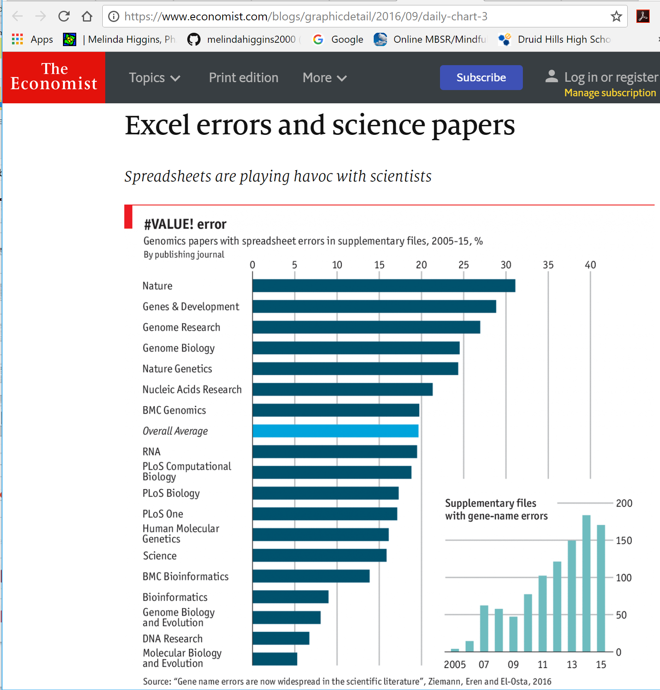

- Module 01: Reproducibile Research
- Module 02: Workshop materials, RStudio Interface, Getting Started with R
- Module 03: Understanding R, Working with objects, R Scripts, R Packages
- — BREAK 10 minutes —
- Module 04: Creating Documents with R Markdown
- Module 05: Create Document = R Script + R Markdown
- Module 06: Customizing R Markdown (templates, parameters and automation)
March 21, 2018: 12:30pm – 3:30pm, EST
Workshop Outline
Module 01
Reproducible Research
Timeline Reproducible Research & TransparencyTimeline partially based on PLOS Blog December 2016http://blogs.plos.org/absolutely-maybe/2016/12/05/reproducibility-crisis-timeline-milestones-in-tackling-research-reliability/
| YEAR | Event |
|---|---|
| 1992 | Jon Claerbout coined the term “reproducible research” in his book “EARTH SOUNDINGS ANALYSIS: Processing versus Inversion (PVI)” |
| 1996 | CONSORT statement introduced standards for reporting clinical trials |
| 2004 | International Committee of Medical Journal Editors (ICMJE) stated they would not publish a clinical trial that had not been registered. |
| 2005 | Ioannidis, J. P. A. Why most published research findings are false. PLoS Med. 2, e124 (2005) |
Timeline Reproducible Research & Transparency
| YEAR | Event |
|---|---|
| 2007 | FDA Amendments Act (FDAAA) required more types of clinical trials to be registered (final rules took effect January 2017) |
| 2009 | Journal of Biostatistics institutes policy to work with authors to publish articles that meet a standard of reproducibility. |
| 2011 | Alsheikh-Ali, et.al. (2011), report the low percentage of researchers satisfying the policies regarding the availability and sharing of their data. |
Cancer Testing Falls Apart

- Duke - Alignment of Cancer Treatments by Gene Type
- MD Anderson wanted to reproduce Duke’s work
- Mistakes found - spreadsheet alignment errors
- Trials shut down, 4 papers retracted, lead investigators resigned
- Patients pursuing legal action
http://www.nytimes.com/2011/07/08/health/research/08genes.html
2010 Video Presentation by Keith A. Baggerly http://videolectures.net/cancerbioinformatics2010_baggerly_irrh/
The Excel-Error Heard Around the World

https://newrepublic.com/article/112951/rogoff-reinhart-and-world-excel-error-research
- Kenneth Rogoff and Carmen Reinhart (Harvard): “Growth in a Time of Debt”
- Claimed countries with debt > 90% of GDP experience slower growth
- Thomas Herndon (28y econ grad student) at Univ of Massachusetts Amherst tried to reproduce these results
- Found major formula error - original paper excluded key data from Canada, New Zealand, and Australia.
Timeline Reproducible Research & Transparency
| YEAR | Event |
|---|---|
| 2012 | Begley and Ellis reviewed 53 “landmark” studies and only 6 (11%) had the scientific findings confirmed. |
| 2013 | Center for Open Science launches & by 2014 the Open Science Framework has 7000 users with more than 45,000+ and over 15 institutions by 2017 |
| 2014 | NIH publishes their guidelines for addressing reproducibility |
| 2015 | The Open Science Collaboration reports that they were only able to replicate between 1/3 to 1/2 of the results from 100 studies |
Wide-Spread Gene Name Errors

https://genomebiology.biomedcentral.com/articles/10.1186/s13059-016-1044-7
Wide-Spread Gene Name Errors
- MS Excel inadvertently converts gene symbols to dates and floating-point numbers
- For example, gene symbols such as SEPT2 (Septin 2) and MARCH1 [Membrane-Associated Ring Finger (C3HC4) 1, E3 Ubiquitin Protein Ligase] are converted by default to ‘2-Sep’ and ‘1-Mar’, respectively.
- RIKEN identifiers were automatically converted to floating point numbers (i.e. from accession ‘2310009E13’ to ‘2.31E+13’).
- And gene symbols were converted to dates in supplementary data of recently published papers (e.g. ‘SEPT2’ converted to ‘2006/09/02’).
Wide-Spread Gene Name Errors

https://www.economist.com/blogs/graphicdetail/2016/09/daily-chart-3
People to Know and Books on Reproducibility
| Image | Book |
|---|---|
 |
Implementing Reproducible Research by Victoria Stodden, Friedrich Leisch, Roger D. Peng https://www.crcpress.com/Implementing-Reproducible-Research/Stodden-Leisch-Peng/p/book/9781466561595 |
 |
Dynamic Documents with R and knitr (Chapman & Hall/CRC The R Series) 1st Edition by Yihui Xie https://www.crcpress.com/Dynamic-Documents-with-R-and-knitr/Xie/p/book/9781482203530 |
 |
bookdown: Authoring Books and Technical Documents with R Markdown by Yihui Xie https://www.crcpress.com/bookdown-Authoring-Books-and-Technical-Documents-with-R-Markdown/Xie/p/book/9781138700109 & read online https://bookdown.org/yihui/bookdown/ |
People to Know and Books on Reproducibility
| Image | Book |
|---|---|
 |
Happy Git and GitHub for the useR by Jenny Bryan; read online http://happygitwithr.com/ |
 |
Using R and RStudio for Data Management, Statistical Analysis, and Graphics, Second Edition by Nicholas J. Horton & Ken Kleinman https://www.crcpress.com/Using-R-and-RStudio-for-Data-Management-Statistical-Analysis-and-Graphics/Horton-Kleinman/p/book/9781482237368; also see Project MOSAIC, http://mosaic-web.org/ |
 & &  |
ModernDive: An Introduction to Statistical and Data Sciences via R by Chester Ismay and Albert Y. Kim; read online https://ismayc.github.io/moderndiver-book/ & Getting used to R, RStudio, and R Markdown by Chester Ismay https://ismayc.github.io/rbasics-book/ |
| . | … and lots more … see https://bookdown.org/ |
Literate Programming > Dynamic Documentation > [R]Markdown
| YEAR | Event |
|---|---|
| 1992 | “Literate Programming” is introduced by Donald Knuth as “that (which) combines a programming language with a documentation language, thereby making programs more robust, more portable, more easily maintained, and arguably more fun to write than programs that are written only in a high-level language. The main idea is to treat a program as a piece of literature, addressed to human beings rather than to a computer.” http://www-cs-faculty.stanford.edu/~knuth/lp.html |
| 2002 |
Friedrich Leisch introduces SWEAVE a program for “Dynamic generation of statistical reports using literate data analysis” https://leisch.userweb.mwn.de/Sweave/ |
Literate Programming > Dynamic Documentation > [R]Markdown
| YEAR | Event |
|---|---|
| 2004 |
John Gruber created the Markdown language in 2004 in collaboration with Aaron Swartz - their goal was to “write using an easy-to-read, easy-to-write plain text format, and optionally convert it to structurally valid XHTML (or HTML)” https://daringfireball.net/projects/markdown/ |
| 2012 | Yihui Xie releases knitr R package released - knitr was inspired by SWEAVE |
| 2014 | rmarkdown R package released - extends Markdown to work with R/RStudio environment |
SWEAVE by Friedrich Leisch

What is Sweave?
“Sweave is a tool that allows to embed the R code for complete data analyses in latex documents. The purpose is to create dynamic reports, which can be updated automatically if data or analysis change. Instead of inserting a prefabricated graph or table into the report, the master document contains the R code necessary to obtain it. When run through R, all data analysis output (tables, graphs, etc.) is created on the fly and inserted into a final latex document. The report can be automatically updated if data or analysis change, which allows for truly reproducible research.”
Friedrich Leisch. Sweave: Dynamic generation of statistical reports using literate data analysis. In Wolfgang Härdle and Bernd Rönz, editors, Compstat 2002 - Proceedings in Computational Statistics, pages 575-580. Physica Verlag, Heidelberg, 2002. ISBN 3-7908-1517-9.
The next evolution <- knitr

In 2012 Yihui Xie, created and released the knitr package for R to extend the capabilities of SWEAVE beyond LaTeX.
“The knitr package was designed to be a transparent engine for dynamic report generation with R, solve some long-standing problems in Sweave, and combine features in other add-on packages into one package.”
https://yihui.name/knitr/
The next evolution <- ... + rmarkdown

In 2014, RStudio released
rmarkdownto extend themarkdownlanguage originally intended to write documents for the “web” (i.e. HTML).https://daringfireball.net/projects/markdown/syntax rmarkdownleverages Pandoc (“universal document converter”)http://pandoc.org/index.html to convert between formats: from HTML (readable by web browsers) to DOC (such as from Microsoft Word or Google Docs) to ODT (Libre Office) to PDF (portable document format) to others like EPUB (e-books), HTML5 slide shows (slidy, ioslides), and TeX based documents and slides (Beamer).
Pandoc https://pandoc.org/
…often called the Swiss-Army knife for converting files from one format to another. Pandoc can convert documents in markdown, reStructuredText, textile, HTML, DocBook, LaTeX, MediaWiki markup, TWiki markup, OPML, Emacs Org-Mode, Txt2Tags, Microsoft Word docx, LibreOffice ODT, EPUB, or Haddock markup to
- HTML formats: XHTML, HTML5,Slidy, reveal.js, Slideous, S5, DZSlides.
- Word processor formats: Microsoft Word docx, OpenOffice/LibreOffice ODT, OpenDocument XML
- Ebooks: EPUB version 2 or 3, FictionBook2
- Documentation formats: DocBook, TEI Simple, GNU TexInfo, Groff man pages, Haddock markup
- Page layout formats: InDesign ICML
- Outline formats: OPML
- TeX formats: LaTeX, ConTeXt, LaTeX Beamer slides
- PDF via LaTeX
- Lightweight markup formats: Markdown (including CommonMark), reStructuredText, AsciiDoc, MediaWiki markup, DokuWiki markup, Emacs Org-Mode, Textile
- Custom formats: written in lua.
The RStudio”HUB”

Reproducible Principles - Process & Structure
- Organization
- Clear Documentation
- Standardized
- Centralized
- Efficiency
Think about your own work…
- What do you want to automate?
- What could you re-use?
- code, files, formatting, graphics, logos, header, footer, boilerplate
- What should you share with your team?
- What do you find yourself doing over and over?
- correcting or reformatting
- If you won the lottery today (and left your job), what do you need to tell your replacement so they can pick up where you left off and complete your current tasks?
Journalism - 538.com
538.com http://fivethirtyeight.com/ hosts stories and opinion pieces covering poll analyses, politics, economics, health, popular culture, and sports. The founder, Nate Silver, and the 538 team are best known for their political polling and forecasting during the United States Presidential and related elections since 2008. ESPN now owns 538.com (as of 2013) retaining Nate Silver as the Editor-in-Chief.
Most of their articles provide references and links to the original data sources plus details on how their figures, analyses and statistical models were developed. They also host the data, code and details behind their analyses on Github https://github.com/fivethirtyeight/.
We will work with some of these datasets in our exercises later in this course and work with the fivethirtyeight R package https://cran.r-project.org/web/packages/fivethirtyeight/.
Telling Stories with Data
Andrew Flowers (economist, data scientist, journalist and former writer for fivethirtyeight.com) presented “Finding and Telling Stories with R” at the 2017 RStudio Conference (Orlando, FL).
The webinar recording of his presentation is available online https://www.rstudio.com/resources/videos/finding-and-telling-stories-with-r/.
In his presentation, he highlights the various aspects of “data journalism” and importance of workflow, data processing and transparency in analysis and communication - all key aspects of reproducibility. Andrew Flowers is also a contributor to the fivethirtyeight R package.
Transparency - Journal of Biostatsatistics
“Our reproducible research policy is for papers in the journal to be kite-marked D if the data on which they are based are freely available, C if the authors’ code is freely available, and R if both data and code are available, and our Associate Editor for Reproducibility is able to use these to reproduce the results in the paper. Data and code are published electronically on the journal’s website as Supplementary Materials.”
https://academic.oup.com/biostatistics/pages/General_Instructions
Example of an article marked R:
- Air pollution and health in Scotland: a multicity study; by Duncan Lee; Claire Ferguson ; and Richard Mitchell; Biostatistics, Volume 10, Issue 3, 1 July 2009, Pages 409–423, https://doi.org/10.1093/biostatistics/kxp010
Speed - 2001 outbreak of E.Coli 0104:H4
In 2001 there was an outbreak of E.Coli 0104:H4 that killed 50 people in Europe http://dx.doi.org/10.5524/100001.
Researchers at BGI (formally the Beijing Genomics Institute) worked in collaboration with the Medical Center in Hamburg-Eppendorf to rapidly sequence the genome of the pathogen. Given the severity of the outbreak, the team announced and released the genome via Twitter to the world-wide community of microbial genomicists.
A Github repository was established https://github.com/ehec-outbreak-crowdsourced/BGI-data-analysis/wiki to “crowdsource” analysis and research to find a treatment.
People started contributing their work in under 24 HOURS and within 5 DAYS!! a bacterial agent was proposed to kill the pathogen. This case, highlights the importance of these methods and work practices not only for speed and efficiency but also in rapidly addressing problems and developing solutions that can save lives.
Documentation
- main component is text
- well written
- good organization and flow
- easily accessible
- understood by team members at all levels
- data + code + text + figures all combined together [e.g. literate programming]
- at end, formatting styles applied via “markup/markdown”
Organization
- projects grow
- supporting documentation and files - numerous
- relationships change and can grow more complex
- need file organization and naming schemes
- file names should be:
- readable by the computer, easy to search, easy to sort (especially by date and author if needed)
- human readable with logical naming schemes and contain enough info so human knows what is in the file/what the file is for
- and short enough to be reasonably manageable
- consider user-based access and security (partitioned by “need to know” [users with editing and write permissions versus users with read-only access]
Research Compendium Example https://github.com/ropensci/rrrpkg
Dissemination - Why?
- store and share your data and code – even if it is only for your future reference
- sometimes expectation/requirement of funding agency, publisher
- increased visibility, you as source - default subject matter expert
- speed of collaboration - faster advancement of science, knowledge
- good will with community/public
Dissemination - How?
- Cloud-based “File Storage”
- Dropbox https://www.dropbox.com/
- Google drive https://www.google.com/drive/
- Github (better with version control and tracking) https://github.com/
- Data repositories
- In addition to Github
- Bitbucket https://bitbucket.org/
- Dryad http://datadryad.org/
- Figshare https://figshare.com/
- Zenodo https://zenodo.org/
Dissemination - Who? (e.g. stakeholders)
- Yourself
- Your organization - internal reports
- Journals - articles, manuscripts
- Books
- Blogs/Websites
- RSS feeds
- Rpubs https://rpubs.com/
- Gitbook https://www.gitbook.com/
- Bookdown https://bookdown.org/yihui/bookdown/
The Big Picture

The Big Picture

The Big Picture

The Big Picture

The Big Picture